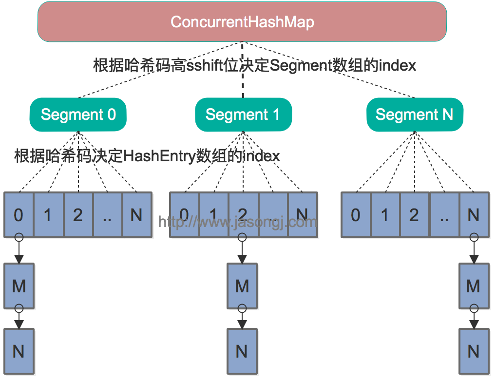

原创文章，转载请务必将下面这段话置于文章开头处（保留超链接）。
本文转发自技术世界，原文链接 http://www.jasongj.com/java/concurrenthashmap/
线程不安全的HashMap
众所周知，HashMap是非线程安全的。而HashMap的线程不安全主要体现在resize时的死循环及使用迭代器时的fast-fail上。
注：本章的代码均基于JDK 1.7.0_67
HashMap工作原理
HashMap数据结构
常用的底层数据结构主要有数组和链表。数组存储区间连续，占用内存较多，寻址容易，插入和删除困难。链表存储区间离散，占用内存较少，寻址困难，插入和删除容易。
HashMap要实现的是哈希表的效果，尽量实现O(1)级别的增删改查。它的具体实现则是同时使用了数组和链表，可以认为最外层是一个数组，数组的每个元素是一个链表的表头。
HashMap寻址方式
对于新插入的数据或者待读取的数据，HashMap将Key的哈希值对数组长度取模，结果作为该Entry在数组中的index。在计算机中，取模的代价远高于位操作的代价，因此HashMap要求数组的长度必须为2的N次方。此时将Key的哈希值对2^N-1进行与运算，其效果即与取模等效。HashMap并不要求用户在指定HashMap容量时必须传入一个2的N次方的整数，而是会通过Integer.highestOneBit算出比指定整数大的最小的2^N值，其实现方法如下。
1 |
public static int highestOneBit(int i) { |
由于Key的哈希值的分布直接决定了所有数据在哈希表上的分布或者说决定了哈希冲突的可能性，因此为防止糟糕的Key的hashCode实现（例如低位都相同，只有高位不相同，与2^N-1取与后的结果都相同），JDK
1.7的HashMap通过如下方法使得最终的哈希值的二进制形式中的1尽量均匀分布从而尽可能减少哈希冲突。
1 |
int h = hashSeed; |
resize死循环
transfer方法
当HashMap的size超过Capacity*loadFactor时，需要对HashMap进行扩容。具体方法是，创建一个新的，长度为原来Capacity两倍的数组，保证新的Capacity仍为2的N次方，从而保证上述寻址方式仍适用。同时需要通过如下transfer方法将原来的所有数据全部重新插入（rehash）到新的数组中。
1 |
void transfer(Entry[] newTable, boolean rehash) { |
该方法并不保证线程安全，而且在多线程并发调用时，可能出现死循环。其执行过程如下。从步骤2可见，转移时链表顺序反转。
- 遍历原数组中的元素
- 对链表上的每一个节点遍历：用next取得要转移那个元素的下一个，将e转移到新数组的头部，使用头插法插入节点
- 循环2，直到链表节点全部转移
- 循环1，直到所有元素全部转移
单线程rehash
单线程情况下，rehash无问题。下图演示了单线程条件下的rehash过程
多线程并发下的rehash
这里假设有两个线程同时执行了put操作并引发了rehash，执行了transfer方法，并假设线程一进入transfer方法并执行完next = e.next后，因为线程调度所分配时间片用完而“暂停”，此时线程二完成了transfer方法的执行。此时状态如下。
接着线程1被唤醒，继续执行第一轮循环的剩余部分
1 |
e.next = newTable[1] = null |
此时循环链表形成，并且key(11)无法加入到线程1的新数组。在下一次访问该链表时会出现死循环。
Fast-fail
产生原因
在使用迭代器的过程中如果HashMap被修改，那么ConcurrentModificationException将被抛出，也即Fast-fail策略。
当HashMap的iterator()方法被调用时，会构造并返回一个新的EntryIterator对象，并将EntryIterator的expectedModCount设置为HashMap的modCount（该变量记录了HashMap被修改的次数）。
1 |
HashIterator() { |
在通过该Iterator的next方法访问下一个Entry时，它会先检查自己的expectedModCount与HashMap的modCount是否相等，如果不相等，说明HashMap被修改，直接抛出ConcurrentModificationException。该Iterator的remove方法也会做类似的检查。该异常的抛出意在提醒用户及早意识到线程安全问题。
线程安全解决方案
单线程条件下，为避免出现ConcurrentModificationException，需要保证只通过HashMap本身或者只通过Iterator去修改数据，不能在Iterator使用结束之前使用HashMap本身的方法修改数据。因为通过Iterator删除数据时，HashMap的modCount和Iterator的expectedModCount都会自增，不影响二者的相等性。如果是增加数据，只能通过HashMap本身的方法完成，此时如果要继续遍历数据，需要重新调用iterator()方法从而重新构造出一个新的Iterator，使得新Iterator的expectedModCount与更新后的HashMap的modCount相等。
多线程条件下，可使用Collections.synchronizedMap方法构造出一个同步Map，或者直接使用线程安全的ConcurrentHashMap。
Java 7基于分段锁的ConcurrentHashMap
注：本章的代码均基于JDK 1.7.0_67
数据结构
Java
7中的ConcurrentHashMap的底层数据结构仍然是数组和链表。与HashMap不同的是，ConcurrentHashMap最外层不是一个大的数组，而是一个Segment的数组。每个Segment包含一个与HashMap数据结构差不多的链表数组。整体数据结构如下图所示。

寻址方式
在读写某个Key时，先取该Key的哈希值。并将哈希值的高N位对Segment个数取模从而得到该Key应该属于哪个Segment，接着如同操作HashMap一样操作这个Segment。为了保证不同的值均匀分布到不同的Segment，需要通过如下方法计算哈希值。
1 |
private int hash(Object k) { |
同样为了提高取模运算效率，通过如下计算，ssize即为大于concurrencyLevel的最小的2的N次方，同时segmentMask为2^N-1。这一点跟上文中计算数组长度的方法一致。对于某一个Key的哈希值，只需要向右移segmentShift位以取高sshift位，再与segmentMask取与操作即可得到它在Segment数组上的索引。
1 |
int sshift = 0; |
同步方式
Segment继承自ReentrantLock，所以我们可以很方便的对每一个Segment上锁。
对于读操作，获取Key所在的Segment时，需要保证可见性(请参考如何保证多线程条件下的可见性)。具体实现上可以使用volatile关键字，也可使用锁。但使用锁开销太大，而使用volatile时每次写操作都会让所有CPU内缓存无效，也有一定开销。ConcurrentHashMap使用如下方法保证可见性，取得最新的Segment。
1 |
Segment<K,V> s = (Segment<K,V>)UNSAFE.getObjectVolatile(segments, u) |
获取Segment中的HashEntry时也使用了类似方法
1 |
HashEntry<K,V> e = (HashEntry<K,V>) UNSAFE.getObjectVolatile |
对于写操作，并不要求同时获取所有Segment的锁，因为那样相当于锁住了整个Map。它会先获取该Key-Value对所在的Segment的锁，获取成功后就可以像操作一个普通的HashMap一样操作该Segment，并保证该Segment的安全性。
同时由于其它Segment的锁并未被获取，因此理论上可支持concurrencyLevel（等于Segment的个数）个线程安全的并发读写。
获取锁时，并不直接使用lock来获取，因为该方法获取锁失败时会挂起（参考可重入锁）。事实上，它使用了自旋锁，如果tryLock获取锁失败，说明锁被其它线程占用，此时通过循环再次以tryLock的方式申请锁。如果在循环过程中该Key所对应的链表头被修改，则重置retry次数。如果retry次数超过一定值，则使用lock方法申请锁。
这里使用自旋锁是因为自旋锁的效率比较高，但是它消耗CPU资源比较多，因此在自旋次数超过阈值时切换为互斥锁。
size操作
put、remove和get操作只需要关心一个Segment，而size操作需要遍历所有的Segment才能算出整个Map的大小。一个简单的方案是，先锁住所有Sgment，计算完后再解锁。但这样做，在做size操作时，不仅无法对Map进行写操作，同时也无法进行读操作，不利于对Map的并行操作。
为更好支持并发操作，ConcurrentHashMap会在不上锁的前提逐个Segment计算3次size，如果某相邻两次计算获取的所有Segment的更新次数（每个Segment都与HashMap一样通过modCount跟踪自己的修改次数，Segment每修改一次其modCount加一）相等，说明这两次计算过程中无更新操作，则这两次计算出的总size相等，可直接作为最终结果返回。如果这三次计算过程中Map有更新，则对所有Segment加锁重新计算Size。该计算方法代码如下
1 |
public int size() { |
不同之处
ConcurrentHashMap与HashMap相比，有以下不同点
- ConcurrentHashMap线程安全，而HashMap非线程安全
- HashMap允许Key和Value为null，而ConcurrentHashMap不允许
- HashMap不允许通过Iterator遍历的同时通过HashMap修改，而ConcurrentHashMap允许该行为，并且该更新对后续的遍历可见
Java 8基于CAS的ConcurrentHashMap
注：本章的代码均基于JDK 1.8.0_111
数据结构
Java 7为实现并行访问，引入了Segment这一结构，实现了分段锁，理论上最大并发度与Segment个数相等。Java 8为进一步提高并发性，摒弃了分段锁的方案，而是直接使用一个大的数组。同时为了提高哈希碰撞下的寻址性能，Java 8在链表长度超过一定阈值（8）时将链表（寻址时间复杂度为O(N)）转换为红黑树（寻址时间复杂度为O(long(N))）。其数据结构如下图所示
寻址方式
Java
8的ConcurrentHashMap同样是通过Key的哈希值与数组长度取模确定该Key在数组中的索引。同样为了避免不太好的Key的hashCode设计，它通过如下方法计算得到Key的最终哈希值。不同的是，Java
8的ConcurrentHashMap作者认为引入红黑树后，即使哈希冲突比较严重，寻址效率也足够高，所以作者并未在哈希值的计算上做过多设计，只是将Key的hashCode值与其高16位作异或并保证最高位为0（从而保证最终结果为正整数）。
1 |
static final int spread(int h) { |
同步方式
对于put操作，如果Key对应的数组元素为null，则通过CAS操作将其设置为当前值。如果Key对应的数组元素（也即链表表头或者树的根元素）不为null，则对该元素使用synchronized关键字申请锁，然后进行操作。如果该put操作使得当前链表长度超过一定阈值，则将该链表转换为树，从而提高寻址效率。
对于读操作，由于数组被volatile关键字修饰，因此不用担心数组的可见性问题。同时每个元素是一个Node实例（Java
7中每个元素是一个HashEntry），它的Key值和hash值都由final修饰，不可变更，无须关心它们被修改后的可见性问题。而其Value及对下一个元素的引用由volatile修饰，可见性也有保障。
1 |
static class Node<K,V> implements Map.Entry<K,V> { |
对于Key对应的数组元素的可见性，由Unsafe的getObjectVolatile方法保证。
1 |
static final <K,V> Node<K,V> tabAt(Node<K,V>[] tab, int i) { |
size操作
put方法和remove方法都会通过addCount方法维护Map的size。size方法通过sumCount获取由addCount方法维护的Map的size。


{kind=link}
{kind=link}
{kind=link}
{kind=link}
{kind=link}
{kind=link}
加载更多